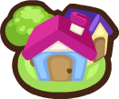

Pet Society shut down in 2013. This is a from-scratch rebuild of the client and server, same items and same rooms, without relying on Flash or an emulator layer to keep it running. Currently in active development.

Original items recovered and catalogued from the archived game.
Core actions from the original backend implemented and tested.
Assets keep their original shape layers, not flattened images.
Direct APK download, no Flash, no browser plugin required.
Pet Society was a Facebook game by Playfish where you adopted a pet, decorated its home, and visited friends' rooms. It ran from 2008 to 2013, then the servers went dark, like most Facebook-era games did.
Read the historyThe original client depended on Adobe Flash, which no longer runs in modern browsers. Instead of patching around that with an emulator layer, this rebuilds the client natively. Same items, same rooms, running on a real backend instead of pretending to.
See current statusNo inflated claims. This is the real state of the project as of today.
Server built on mascotsociety, an independent Pet Society backend reimplementation.
View the repoThe Android APK isn't ready. When it is, it'll be a direct download here. No Play Store for the first release.
No. This is an unofficial fan project. It isn't affiliated with Playfish or Electronic Arts, who own the original game and its assets.
iOS builds need Mac hardware and a paid developer account. Android sideloading has neither requirement, so it's the faster path to something people can actually install.